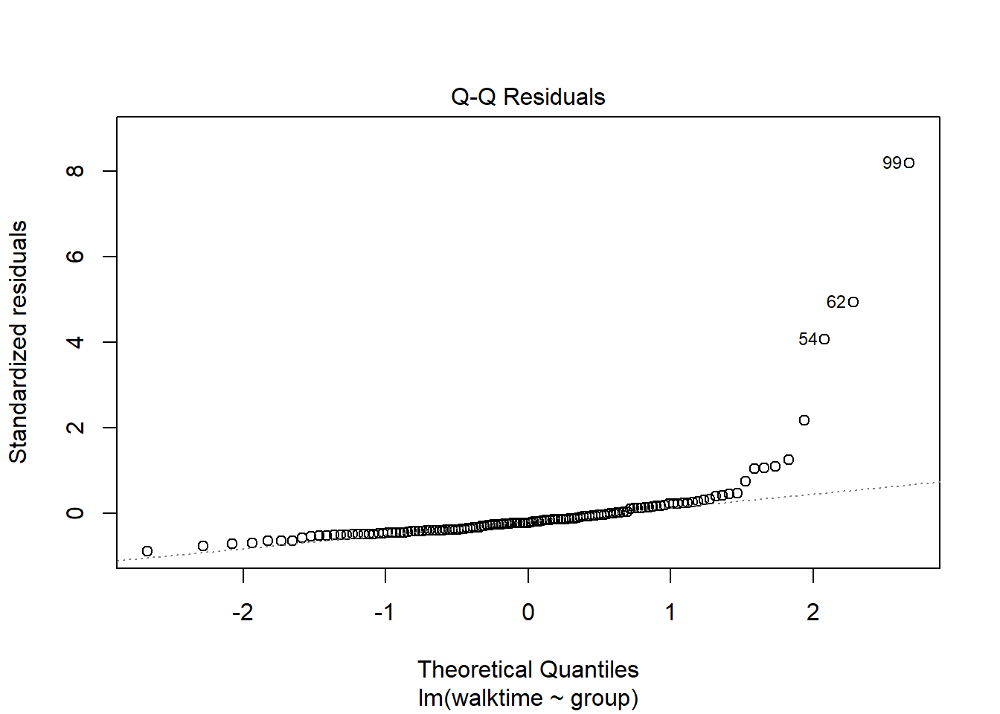
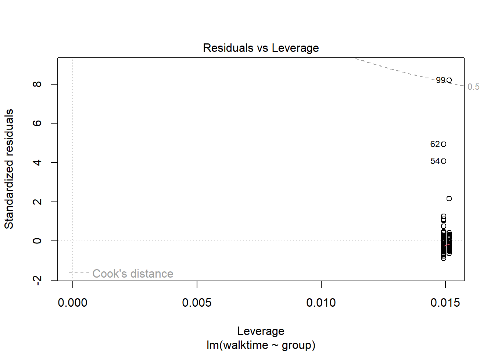
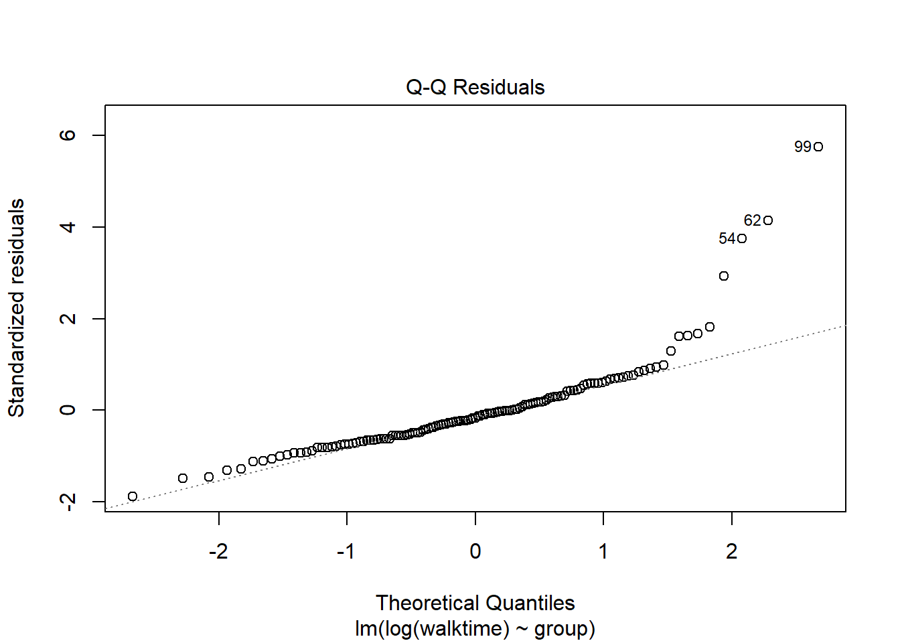
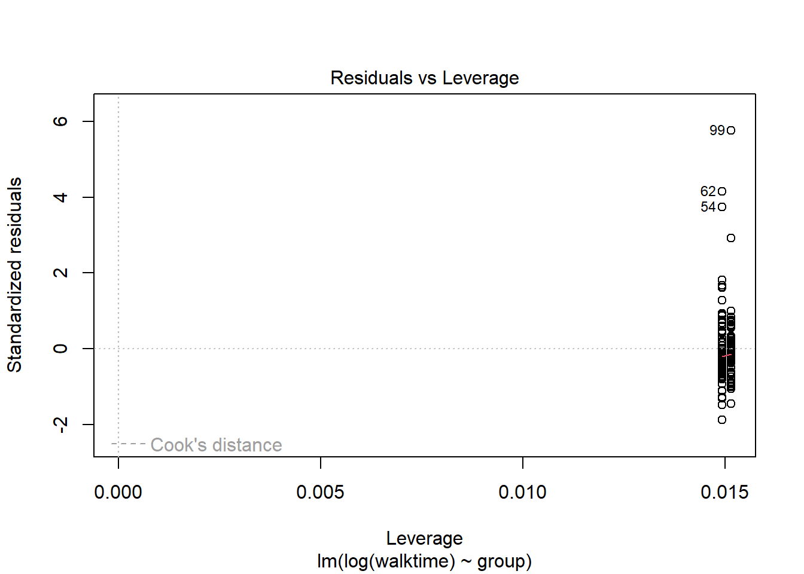

This page supports a short workshop in R and RStudio for Statistics. It is not intended as a comprehensive tutorial but as a vehicle for demonstrating and discussing some aspects of a typical analysis using R, with signposting in the lecture notes for further self-directed learning.
A simple dataset is introduced along with some research questions and I demonstrate a typical process of loading, visualising, cleaning, analysing and reporting the analysis. The workshop will very briefly introduce:
the RStudio interface
sources of help
using projects and scripts
basics of the R language
loading data from excel
tidy data
the tidyverse and data.table systems for data wrangling
merging and appending datasets
running a R function with named arguments
the formula interface
how to estimate a linear models
ggplot
Supporting material (presentation slides, dataset) is linked.
A more detailed R tutorial is also available on this site.
Background to the dataset
We have an Excel spreadsheet with data corresponding to a rehabilitation intervention for stroke patients.
Hospital patients were recruited from five hospital departments and were randomised to either standard care or an experimental treatment. The time they took to complete a walking speed task was recorded as the outcome. A lower time corresponds to a better outcome.
What is the mean and standard deviation of walking speed in each treatment group?
Does the treatment improve walking speed?
Is the treatment effect different between men and women?
Our workflow is typical of most staistical analyses:
Load data
Wrangle
Describe
Visualise
Clean and recode
Test and model
Report
Set up
We will need to install the libraries below if we don’t already have them. We should also start a new project in the project directory, and download the data and the code if necessary.
library(ggplot2)
Warning: package 'ggplot2' was built under R version 4.1.3
library(dplyr)
Warning: package 'dplyr' was built under R version 4.1.3
Attaching package: 'dplyr'
The following objects are masked from 'package:stats':
filter, lag
The following objects are masked from 'package:base':
intersect, setdiff, setequal, union
library(data.table)
Warning: package 'data.table' was built under R version 4.1.3
Attaching package: 'data.table'
The following objects are masked from 'package:dplyr':
between, first, last
library(readxl)
Warning: package 'readxl' was built under R version 4.1.3
Load data
We should inspect the data in Excel. Note there are three sheets that we need to combine to do our analysis.
Review the “tidy data” powerpoint presentation here: day2_tidydata.pptx.
For analysis we will need all the data into one data frame. We need to append (row bind) the treatment and control results, then merge (join) the meta data.
# Remind ourselves of the structure of the datasetstr(treated)
We need to make sure the vectors we are merging have the same type and name!
There are a lot of ways to do the same thing. Here I am illustrating the ‘base’ R way, the ‘tidyverse’ way and the ‘data.table’ way to convert a new numeric variable from a character variable.
# Base Rtreated$walktime <-as.numeric(treated$time)
patid group time walktime sex age department
1: 1 treated 1.8975120000000001 1.897512 M 53 3
2: 2 control <NA> 3.537158 M 61 3
3: 3 treated 2.927432 2.927432 M 65 1
4: 4 control <NA> 1.819787 M 48 2
5: 5 treated 2.2042579999999998 2.204258 M 62 2
6: 6 control <NA> 3.038065 M 62 4
str(walkingdata)
Classes 'data.table' and 'data.frame': 136 obs. of 7 variables:
$ patid : num 1 2 3 4 5 6 7 8 9 10 ...
$ group : chr "treated" "control" "treated" "control" ...
$ time : chr "1.8975120000000001" NA "2.927432" NA ...
$ walktime : num 1.9 3.54 2.93 1.82 2.2 ...
$ sex : chr "M" "M" "M" "M" ...
$ age : num 53 61 65 48 62 62 57 57 57 55 ...
$ department: num 3 3 1 2 2 4 2 4 3 2 ...
- attr(*, ".internal.selfref")=<externalptr>
- attr(*, "sorted")= chr "patid"
summary(walkingdata)
patid group time walktime
Min. : 1.00 Length:136 Length:136 Min. : 0.0154
1st Qu.: 34.75 Class :character Class :character 1st Qu.: 2.1688
Median : 68.50 Mode :character Mode :character Median : 2.4287
Mean : 68.52 Mean : 4.1956
3rd Qu.:102.25 3rd Qu.: 2.9491
Max. :138.00 Max. :185.3620
NA's :1
sex age department
Length:136 Min. :45.00 Min. :1.000
Class :character 1st Qu.:54.00 1st Qu.:2.000
Mode :character Median :57.00 Median :3.000
Mean :57.55 Mean :2.596
3rd Qu.:60.25 3rd Qu.:3.250
Max. :72.00 Max. :4.000
Describe
Our first task was to describe the mean and standard deviation of walking time by group. There is no simple way to do this with base R. Possible tidyverse and data.table approaches are shown below.
group Mean SD
1: treated 2.609674 1.999246
2: control 5.712487 22.011155
Visualise
Base R graphics are difficult to work with. ggplot2 provides an excellent system for graphing scientific data using R. See the associated slides and flipbook.
# A very bad graphplot(walkingdata$age , walkingdata$walktime)
# A better graphggplot(walkingdata) +aes(x=age, y=walktime) +geom_point()
Now we can conduct a simple statistical test of the walking speed across groups. Note the ‘formula’ interface:
t.test( data = walkingdata , walktime ~ group)
Welch Two Sample t-test
data: walktime by group
t = 1.5788, df = 126.69, p-value = 0.1169
alternative hypothesis: true difference in means between group control and group treated is not equal to 0
95 percent confidence interval:
-0.1283567 1.1413738
sample estimates:
mean in group control mean in group treated
3.116183 2.609674
ttest1 <-t.test( data = walkingdata , walktime ~ group)ttest1$p.value
[1] 0.1168802
What does this suggest about the treatment effectiveness?
Model
This test ignores much of what we know about these participants, and may not be suitable. A linear model is a better paradiagm for statistical analysis. It allows us to build more complex analyses, and easily test our assumptions.
lm1 <-lm( data = walkingdata , walktime ~ group)summary(lm1)
Call:
lm(formula = walktime ~ group, data = walkingdata)
Residuals:
Min 1Q Median 3Q Max
-1.6223 -0.7297 -0.3963 0.0604 15.0317
Coefficients:
Estimate Std. Error t value Pr(>|t|)
(Intercept) 3.1162 0.2257 13.806 <2e-16 ***
grouptreated -0.5065 0.3204 -1.581 0.116
---
Signif. codes: 0 '***' 0.001 '**' 0.01 '*' 0.05 '.' 0.1 ' ' 1
Residual standard error: 1.848 on 131 degrees of freedom
(3 observations deleted due to missingness)
Multiple R-squared: 0.01872, Adjusted R-squared: 0.01123
F-statistic: 2.499 on 1 and 131 DF, p-value: 0.1163
The diagnostics suggest something is wrong. We can transform the data so that the assumptions of the model are met.
plot(lm1)


walkingdata[ , speed :=1/walktime]lm2 <-lm( data = walkingdata , log(walktime) ~ group)lm3 <-lm( data = walkingdata , 1/walktime ~ group)plot(lm2)


plot(lm3)
summary(lm3)
Call:
lm(formula = 1/walktime ~ group, data = walkingdata)
Residuals:
Min 1Q Median 3Q Max
-0.38121 -0.06170 0.00132 0.06453 0.30257
Coefficients:
Estimate Std. Error t value Pr(>|t|)
(Intercept) 0.36681 0.01287 28.500 < 2e-16 ***
grouptreated 0.07108 0.01827 3.891 0.000158 ***
---
Signif. codes: 0 '***' 0.001 '**' 0.01 '*' 0.05 '.' 0.1 ' ' 1
Residual standard error: 0.1053 on 131 degrees of freedom
(3 observations deleted due to missingness)
Multiple R-squared: 0.1036, Adjusted R-squared: 0.09674
F-statistic: 15.14 on 1 and 131 DF, p-value: 0.0001583
gtsummary::tbl_regression(lm3)
Characteristic
Beta
95% CI1
p-value
group
control
—
—
treated
0.07
0.03, 0.11
<0.001
1 CI = Confidence Interval
Is the interpretation different now?
Augment model
We can develop the model by adding terms for age and department. We should always include these because they explain variance in the outcome measure.
lm4 <-lm( data = walkingdata , 1/walktime ~ group + age + sex + department)gtsummary::tbl_regression(lm4)
Characteristic
Beta
95% CI1
p-value
group
control
—
—
treated
0.07
0.04, 0.11
<0.001
age
0.00
-0.01, 0.00
0.029
sex
F
—
—
M
-0.01
-0.05, 0.03
0.6
department
0.02
0.00, 0.03
0.060
1 CI = Confidence Interval
lm5 <-lm( data = walkingdata , 1/walktime ~ group + age + sex +factor(department))gtsummary::tbl_regression(lm5)
Characteristic
Beta
95% CI1
p-value
group
control
—
—
treated
0.07
0.03, 0.11
<0.001
age
0.00
-0.01, 0.00
0.028
sex
F
—
—
M
-0.01
-0.05, 0.04
0.7
factor(department)
1
—
—
2
-0.01
-0.06, 0.04
0.7
3
0.04
-0.01, 0.09
0.10
4
0.03
-0.02, 0.08
0.2
1 CI = Confidence Interval
anova(lm5 , update(lm5, . ~ . -age))
Analysis of Variance Table
Model 1: 1/walktime ~ group + age + sex + factor(department)
Model 2: 1/walktime ~ group + sex + factor(department)
Res.Df RSS Df Sum of Sq F Pr(>F)
1 126 1.3190
2 127 1.3709 -1 -0.051897 4.9574 0.02776 *
---
Signif. codes: 0 '***' 0.001 '**' 0.01 '*' 0.05 '.' 0.1 ' ' 1
Interactions
To test whether the treatment effect varies by sex we should test the group*sex interaction.
lm6 <-lm( data = walkingdata , 1/walktime ~ group*sex + age +factor(department))gtsummary::tbl_regression(lm6)
Characteristic
Beta
95% CI1
p-value
group
control
—
—
treated
0.05
-0.02, 0.12
0.14
sex
F
—
—
M
-0.02
-0.08, 0.04
0.5
age
0.00
-0.01, 0.00
0.029
factor(department)
1
—
—
2
-0.01
-0.07, 0.04
0.6
3
0.04
-0.01, 0.09
0.10
4
0.03
-0.02, 0.08
0.2
group * sex
treated * M
0.03
-0.05, 0.11
0.5
1 CI = Confidence Interval
anova( lm5 , lm6 )
Analysis of Variance Table
Model 1: 1/walktime ~ group + age + sex + factor(department)
Model 2: 1/walktime ~ group * sex + age + factor(department)
Res.Df RSS Df Sum of Sq F Pr(>F)
1 126 1.3190
2 125 1.3148 1 0.0042764 0.4066 0.5249
library(emmeans)
Warning: package 'emmeans' was built under R version 4.1.3
emmeans(lm6, pairwise ~ group | sex)
$emmeans
sex = F:
group emmean SE df lower.CL upper.CL
control 0.379 0.0246 125 0.330 0.428
treated 0.430 0.0260 125 0.379 0.482
sex = M:
group emmean SE df lower.CL upper.CL
control 0.359 0.0151 125 0.330 0.389
treated 0.436 0.0150 125 0.407 0.466
Results are averaged over the levels of: department
Confidence level used: 0.95
$contrasts
sex = F:
contrast estimate SE df t.ratio p.value
control - treated -0.0513 0.0346 125 -1.481 0.1411
sex = M:
contrast estimate SE df t.ratio p.value
control - treated -0.0771 0.0211 125 -3.654 0.0004
Results are averaged over the levels of: department
treatmentestimates <-as.data.frame(confint(emmeans(lm6, pairwise ~ group | sex)$contrast))